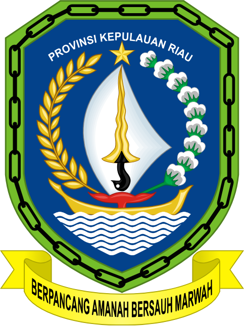
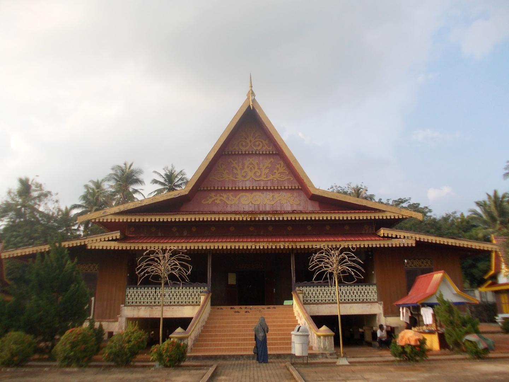
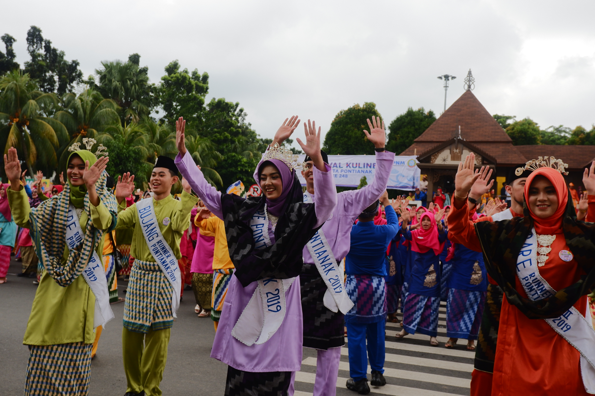
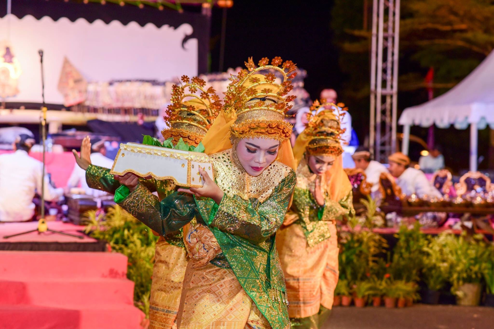
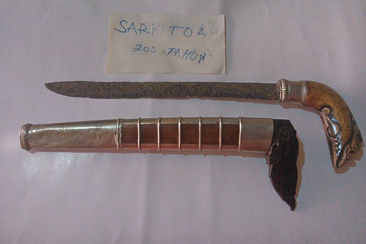
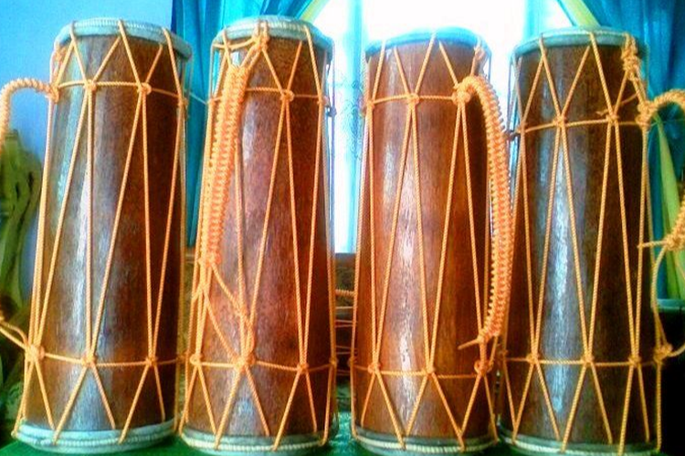
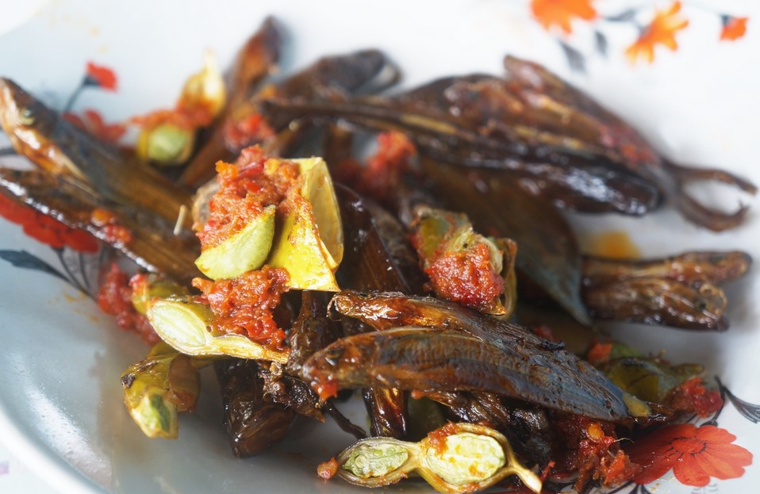
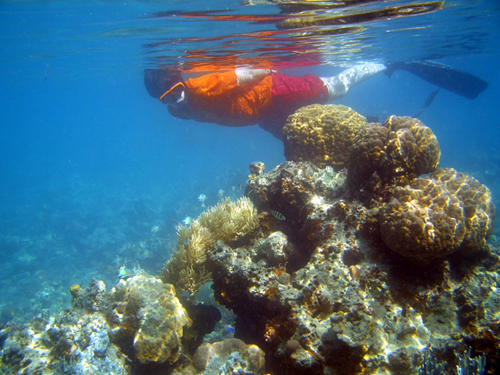

Kepulauan Riau
Kepulauan Riau (disingkat Kepri) adalah sebuah wilayah provinsi
yang terletak di Indonesia. Ibu kota Provinsi Kepulauan Riau ini
adalah Kota Tanjungpinang. Provinsi ini berbatasan langsung dengan
Vietnam dan Kamboja di sebelah Utara; Malaysia dan provinsi
Kalimantan Barat di sebelah Timur; provinsi Kepulauan Bangka
Belitung dan Jambi di Selatan; negara Singapura, Malaysia dan
provinsi Riau di sebelah Barat. Provinsi ini termasuk provinsi
kepulauan di Indonesia. Tahun 2020, penduduk Kepulauan Riau
berjumlah 2.064.564 jiwa, dengan kepadatan 252 jiwa/km2, dan 58%
penduduknya berada di kota Batam.
Informasi Umum
| Nama |
Kode Wilayah Indonesia |
Kode Internasional |
Singkatan Umum |
Ibu Kota |
Hari Jadi |
Lambang |
| Kepulauan Riau |
21 |
ID-KR |
Kepri |
Tanjung Pinang |
24 September 2002 |

|
Budaya
Rumah Adat

Rumah Belah Bubung adalah rumah adat dari kepulauan Riau yang
berada di Indonesia. Rumah Belah Bubung juga dikenal dengan nama
rumah rabung atau rumah bubung melayu. Rumah Belah Bubung memiliki
model rumah yang sama dengan rumah panggung. Rumah ini memiliki
tinggi 2 meter dari tanah dan ditopang oleh beberapa tiang
penyangga. Rumah ini memiliki atap yang berbentuk seperti pelana
kuda. Rumah induk terbagi menjadi 4 bagian yaitu selasar, ruang
induk, ruang penghubung dapur, dan dapur. Proses pembangunan rumah
pun tidak sembarangan karena harus melalui beberapa tahap yang
dipercaya menghindari pemilik rumah dari kesialan. Semakin besar
ukuran rumah ini memperlihatkan bahwa kemampuan ekonomi dari
pemilik rumah adalah menengah ke atas, tetapi semakin kecil rumah
ini menunjukkan bahwa ekonomi pemilik rumah menengah ke bawah.
Tarian Tradisional
Aceh memiliki banyak tarian dari 9 etnis yang ada. Beberapa tarian
yang terkenal di tingkat nasional dan bahkan dunia merupakan
tarian yang berasal dari Aceh, seperti Tari Saman dan Tari
Seudati.

Tari Zapin merupakan tarian yang berasal dari negeri Yaman yang
populer dalam kalangan masyarakat Melayu di Indonesia, terutama di
wilayah yang bermayoritas Melayu seperti di Kepulauan Riau. Zapin
diyakini masuk ke wilayah Nusantara dipengaruhi oleh orang-orang
Persia dan Arab yang berakulturasi dengan kebudayaan Melayu lokal
dalam menyebarkan ajaran Islam dari Timur Tengah pada sekitar abad
keempat belas. Dahulu, tarian ini hanya dilakukan untuk upacara
keagamaan tetapi selama bertahun-tahun tarian itu telah berkembang
menjadi suatu bentuk hiburan tradisional bagi masyarakat Melayu.
Bahasa Daerah
Bahasa daerah yang ada Provinsi Kepulauan Riau adalah bahasa
Melayu Riau yang digunakan masyarakat seluruh Provinsi Riau dalam
kehidupan sehari-hari, yang sudah menjadi ciri khas masyarakat
Kepulauan Riau. Bahasa melayu Riau ini digadang sebagai cikal
bakal bahasa Indonesia, sehingga terkadang terdengar sangat mirip
dengan bahasa Indonesia baku. Pemilihan bahasa melayu Riau sebagai
akar bahasa Indonesia sesuai dengan kebijakan pemerintah Kolonial
Belanda
Tradisi Adat

Tari makan sirih (Persembahan) adalah salah satu tarian
tradisional atau tarian klasik riau (melayu) yang umumnya
dipentaskan untuk menyambut dan dipersembahkan untuk menghormati
tamu negara / tamu agung yang datang. Saat pertunjukan, salah satu
penari dalam tari persembahan akan membawa kotak yang berisi
sirih. Sirih dalam kotak tersebut kemudian dibuka dan tamu yang
dianggap agung diberi kesempatan pertama untuk mengambilnya
sebagai bentuk penghormatan, kemudian diikuti oleh tamu yang lain.
Karenanya, banyak orang yang menyebut tari persembahan Riau dengan
sebutan tari sekapur sirih.
Senjata Tradisional

Badik tumbuk lada merupakan senjata khas Kepulauan Riau. Bentuknya
seperti keris namun lebih pendek. Badik tumbuk lada terbuat dari
besi dan baja dan memiliki sarung penutup yang terbuat dari kayu
dengan lapisan emas atau perak.
Lagu Daerah
Kepulauan Riau kaya akan beragam kebudayaan yang terjaga hingga
kini. Salah satunya, yakni lagu daerah. Salah satu lagu daerah
Kepulauan Riau yaitu Segantang Lada. Lagu daerah ini sendiri
mengisahkan seorang gadis yang merindukan kekasihnya. Sebenarnya,
lagu ini menggambarkan kecintaan terhadap tanah Riau. Karena,
Segantang Lada adalah julukan bagi daerah Provinsi Riau.
Alat Musik Daerah

Alat musik asal Kepulauan Riau adalah gendang panjang yang
termasuk dalam jenis alat musik membranofon. Alat musik
tradisional ini sering digunakan untuk mengiringi lagu daerah
bersamaan dengan alat musik lainnya atau dimainkan dalam upacara
tertentu, seperti pernikahan, penyambutan tamu penting dan lain
sebagainya. Menurut Ketut Wisnawa dalam buku Seni Musik Tradisi
Nusantara (2020), gendang panjang dimainkan dengan cara ditepuk
pada bagian membrannya menggunakan telapak tangan. Cara menepuknya
harus tepat agar bisa menghasilkan suara yang pas.
Kuliner

Ikan selais merupakan makanan khas Kepulauan Riau yang mana ikan
ini diasap dalam waktu yang cukup lama hingga ikan kering.
Penyajiannya, ikan selais asap dimasak kembali menggunakan
rempah-rempah khas Kepulauan Riau dan dihidangkan bersama petai
yang membuat selera makan menjadi nikmat.
Destinasi Wisata

Provinsi Kepulauan Riau merupakan gerbang wisata dari mancanegara
kedua setelah Pulau Bali. Jumlah wisatawan asing yang datang
berkunjung mencapai 1,5 juta orang pada tahun 2005. Objek wisata
di provinsi Kepulauan Riau antara lain adalah wisata pantai yang
terletak di kota Batam. Selain itu, terdapat Kabupaten Natuna yang
terkenal dengan wisata baharinya seperti selam permukaan.